Yoga Poses:
For period cramps :
-
Cobra pose:
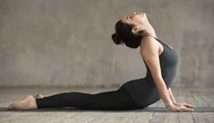
- Lie on your stomach with your legs straight and feet together
- place your hands under your shoulders. Using your hands to push you, lift your head and shoulders.
- Breathe deeply.
Try to completely fill the belly when you breathe - Butterfly pose 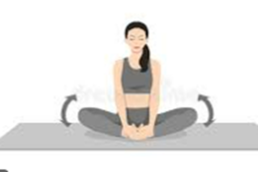
-
Cow/Cat pose :
Cow pose :
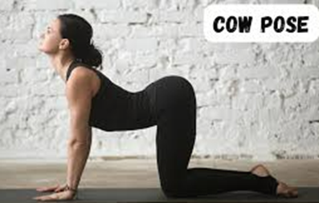- Get on your hands and knees.
- Make sure your hands are directly under your shoulders and your knees are directly under your hips.
- Take a deep breath in, and lower your belly toward the ground, while you gently stretch your head and bottom
Next continue with cat pose
When you are ready to change your position
Cat pose:
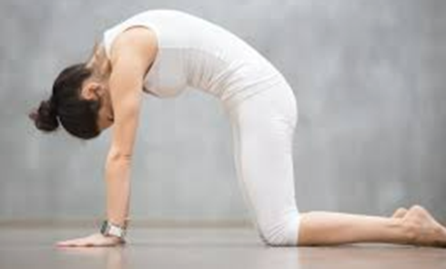- Inhale deeply, then as you breathe out
- Curl your back toward the sky, with your head and bottom gently stretching towards the ground.
-
Viparita Karanai (Legs-Up-The-Wall)
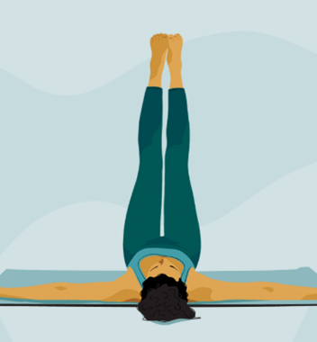
- Bring the short end of your mat to a wall.
- Sit sideways next to the wall. Lie down and turn your body, taking your legs up the wall.
- You will want your sacrum on the floor, so slide back as much as you need to, to achieve that.
- Take a narrowly folded blanket or thin bolster underneath your sacrum. Ensure your sit bones are on the floor.
- Place your arms anywhere that feels comfortable.
-
Fish Pose:
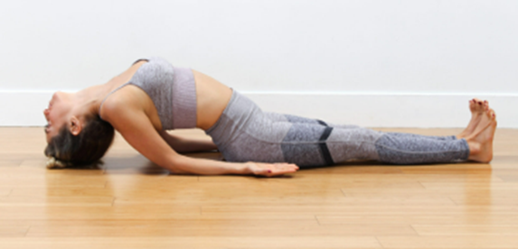
- Place a pillow on the floor.
- Place your back and head on the pillow and place your legs straight in front of you on the floor.
- Place your arms comfortably at your sides, with your palms facing up.
- Stay in this pose, breathing gently, as long as you feel comfortable.
- If having the legs straight causes low back discomfort, please bend the knees with feet flat on the floor.
For PCOS/PCOD as well Hormonal Imbalance
-
Cardiovascular Excercises:
- Squats
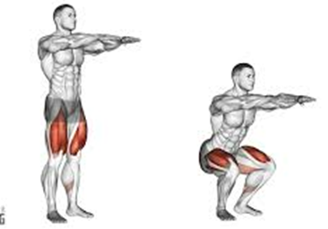 -
Leg raises
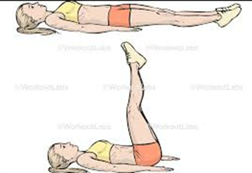 - Push ups
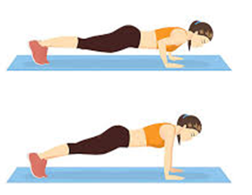
- Squats
-
Strength Training
- Jumping Jacks
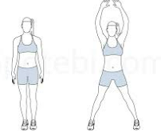 - High Knees
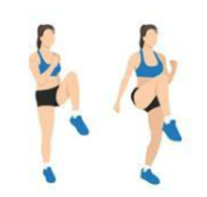 - Knee clap
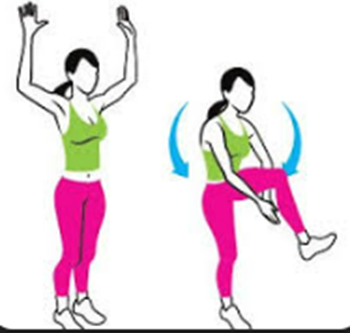
- Jumping Jacks
Endometriosis:
-
Standing hip flexor stretch
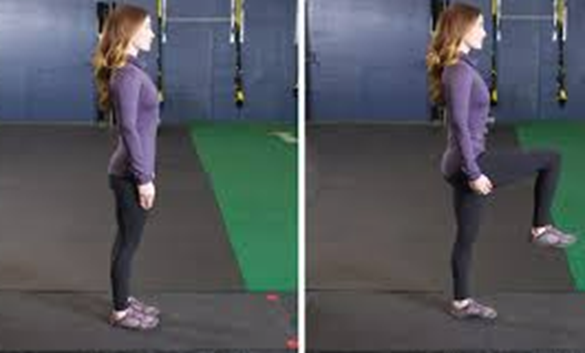- Stand with one leg in front of the other.
- Raise the heel of the back foot and bend the knees slightly.
- Tuck in the buttocks so that the pelvis tilts under, causing a stretching sensation at the front of the hip.
- Hold the position for 30 seconds and repeat on the opposite side.
-
Seated piriformis stretch
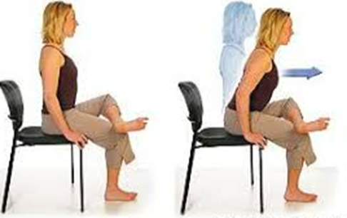- Sit on a chair with the back straight and both feet flat against the floor.
- Cross the legs so that the outer part of the left ankle rests atop the right knee.
- Slowly lean forward while keeping the back straight. If the stretch feels too intense, slouch back a little into the chair.
- Hold the position for 30 seconds, then switch to the opposite side.
-
Child’s pose
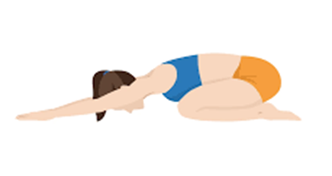- Kneel with the buttocks resting on top of the heels and both palms resting on top of the thighs.
- Gently exhale while lowering the upper body toward the floor, arms outstretched in front with palms facing down.
- Place the forehead against the floor and relax both shoulders toward the ground.
- Hold the position for a few seconds to increase the stretch.
-
Bridge Pose:
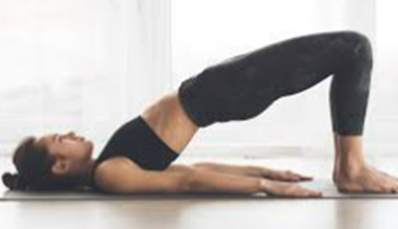- Lie on your back with both knees bent, arms resting to the sides, and palms facing down.
- Engage your deep abdominal muscles and squeeze the buttocks.
- Starting with the tailbone, slowly raise the hips off the ground.
- Slowly return to the starting position, ensuring the tailbone is the last part of the body to touch the ground.
Menopause/Stress Management
-
Kapalbhati: Rapid exhalations and effortless inhalations
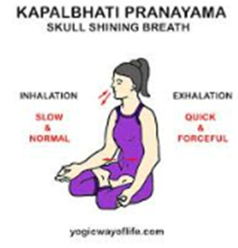 -
Anulom Vilom: Inhalation and exhalation from one nostril while closing other
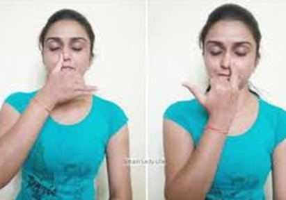 -
Butterfly Pose: Lateral Swinging of legs
EXCERCISES
References:
- https://www.nationwidechildrens.org/family-resources-education/health-wellness-and-safety-resources/helping-hands/yoga-exercises-and-menstrual-cramps
- https://www.healthline.com/health/fitness/yoga-poses-for-period-cramps
- Exercise For PCOS: Best Plan, Types of Exercise, and Effects- Aster DM Healthcare
- 10 Effective Yoga Poses Can Help PCOD - Krsna Physio Plus